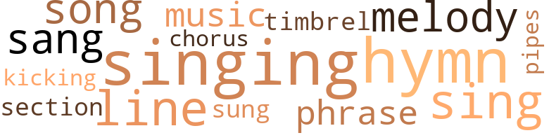
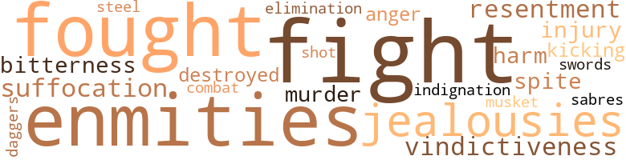
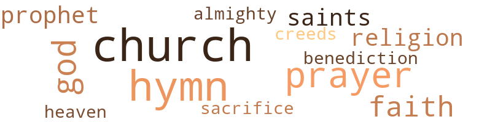

Awakening of Hezekiah Jones, by Bruce, John Edward (1916)
41 music-related terms matched in this text.
Most frequent terms in this topic: hymn (7); singing (7); sing (4); melody (3); line (3)
chorus.n.01
Definition: any utterance produced simultaneously by a group
| word | sentence |
|---|---|
| chorus | " Capital , capital , Brainard ! " they all said in chorus . |
hymn.n.01
Definition: a song of praise (to God or to a saint or to a nation)
| word | sentence |
|---|---|
| hymn | Moore 's hymn . |
| hymn | It seems to me that I hear those Negroes singing that hymn now . " |
| hymn | " Well , after that great hymn of Moore 's this little old-man , who had not been in auditorium while the audience was assembling , walked upon the platform from a little room off on the side of the pulpit , and , advancing to the old-fashioned pulpit on which rested a huge Bible , he stood there for two or three seconds engaged in prayer . |
| hymn | " When the little old man sat down , one of the deacons , who was as black as the speaker , but a finer specimen physically than he , began to sing a hymn , the words of which , as I jotted them down , were as follows : ' Come saints and sinners , hear me tell The wonders of Immanuel , Who snatched me from a burning hell And placed my soul with God to dwell , And this is heavenly union . ' |
| hymn | " John , I thought when I heard those Negroes sing Moore 's hymn , ' Miriam , ' I had heard some singing , but I pledge you ray word that the singing of this Negro melody was as far beyond it in volume and melody as grand opera is beyond a popular song . |
| hymn | The man lined out this grand old hymn , singing the first two lines himself , and the great throng of Negroes in the audience , every one of whom seemed to know it , took it up , and sang it with a fervor and earnestness that I never dreamed it was possible to put into music . |
| hymn | John , I 'd give fifty dollars gladly if it were possible to hear that hymn sung again as I heard it then . |
kick.v.04
Definition: kick a leg up
| word | sentence |
|---|---|
| kicking | Then with mock seriousness he said , " Mr. Jones , I have heard several of my friends speak of your splendid speech the other night and I have several times felt like kicking myself because I did not go to it . |
music.n.01
Definition: an artistic form of auditory communication incorporating instrumental or vocal tones in a structured and continuous manner
| word | sentence |
|---|---|
| music | There was a swing to the music that transfixed me , and I was heartily sorry when its last notes died away . |
| music | The man lined out this grand old hymn , singing the first two lines himself , and the great throng of Negroes in the audience , every one of whom seemed to know it , took it up , and sang it with a fervor and earnestness that I never dreamed it was possible to put into music . |
phrase.n.02
Definition: a short musical passage
| word | sentence |
|---|---|
| phrase | The next evening at the Commercial Club , Colonel J. M. Saxe , an old-line Republican , who had fought gallantly in the Civil War with a regiment of Negro soldiers about whose bravery and courage he always spoke in fulsome phrase , said to the city chairman , with whom he was sitting on a big settee : " Do n't you think we ought to do something handsome for Hezekiah ? |
| phrase | After having passed through the ordeal of flattery heaped upon him by the super-serviceable Brainard and of hearing himself praised in fulsome phrase by the crafty and artful Col. Gibbons , and listening to his Uriah Heep explanation and apology for his remissness in forwarding to him the invitation to the conference , Hez-ekiali had to listen once more to the Brainard outgivings , not more sincere than those he had previously emitted . |
pipe.n.04
Definition: a tubular wind instrument
| word | sentence |
|---|---|
| pipes | The walls of the room were hung with mementoes of the chase , signed photographs of his personal friends , a steel engraving of Lincoln , curiously fashioned pipes , a musket used by one of his Revolutionary ancestors , a collection of swords , sabres , daggers , and , over the mantel , the head of a deer which the Colonel had shot on one of his hunting trips in Maine . |
section.n.01
Definition: a self-contained part of a larger composition (written or musical)
| word | sentence |
|---|---|
| section | His very first sentence struck me so forcibly that I resorted to my limited knowledge of short - hand and took down as best I could , his remarkable address , he clearly understood and boldly declared that emancipation was neither a philanthropic nor an humanitarian act , but a war necessity , born of no love for his race , but of the unconquerable desire of best white men of both section to preserve the union as it was , but without slavery . |
sing.v.02
Definition: produce tones with the voice
| word | sentence |
|---|---|
| sang | The great audience took up the melody and sang as I have never heard any people sing that song since . |
| sing | The great audience took up the melody and sang as I have never heard any people sing that song since . |
| sing | When I was in Germany four or five years ago , I heard a great Negro tenor sing , who could make his fortune in America , with a good manager , if he only had a white face , but he was a genuine black and as handsome in face and as perfect in physical development as any man I ever saw . |
| sing | " When the little old man sat down , one of the deacons , who was as black as the speaker , but a finer specimen physically than he , began to sing a hymn , the words of which , as I jotted them down , were as follows : ' Come saints and sinners , hear me tell The wonders of Immanuel , Who snatched me from a burning hell And placed my soul with God to dwell , And this is heavenly union . ' |
| singing | The man lined out this grand old hymn , singing the first two lines himself , and the great throng of Negroes in the audience , every one of whom seemed to know it , took it up , and sang it with a fervor and earnestness that I never dreamed it was possible to put into music . |
| sang | The man lined out this grand old hymn , singing the first two lines himself , and the great throng of Negroes in the audience , every one of whom seemed to know it , took it up , and sang it with a fervor and earnestness that I never dreamed it was possible to put into music . |
| sung | John , I 'd give fifty dollars gladly if it were possible to hear that hymn sung again as I heard it then . |
| sang | " Then , while the choir sang , everybody , men , women and children , passed up one aisle and down another to their seats , or on out of the church into the street . |
singing.n.01
Definition: the act of singing vocal music
| word | sentence |
|---|---|
| singing | " As I had nothing else to do , I thought I would go and listen to the speeches and the singing - two gifts with which the Negro has been signally blessed . |
| singing | It seems to me that I hear those Negroes singing that hymn now . " |
| singing | When a thing has once been photographed on your memory it remains with you for all time , i told you about the singing of those Negroes and its electrical effect upon me . |
| singing | " John , I thought when I heard those Negroes sing Moore 's hymn , ' Miriam , ' I had heard some singing , but I pledge you ray word that the singing of this Negro melody was as far beyond it in volume and melody as grand opera is beyond a popular song . |
| singing | " John , I thought when I heard those Negroes sing Moore 's hymn , ' Miriam , ' I had heard some singing , but I pledge you ray word that the singing of this Negro melody was as far beyond it in volume and melody as grand opera is beyond a popular song . |
| singing | " Well , when they had finished singing , the little , old black man stood up again and , raising his hand to command silence , said : ' I want all of you to come up to the table at the close of the service and give something , if no more than a penny , toward a fund for building a school house for our children , the men and women of tomorrow . |
song.n.01
Definition: a short musical composition with words
| word | sentence |
|---|---|
| Song | ' The Song of Miriam ' : ' Sound the loud timbrel o'er Egypt 's dark sea ! |
| song | The great audience took up the melody and sang as I have never heard any people sing that song since . |
| song | " John , I thought when I heard those Negroes sing Moore 's hymn , ' Miriam , ' I had heard some singing , but I pledge you ray word that the singing of this Negro melody was as far beyond it in volume and melody as grand opera is beyond a popular song . |
timbrel.n.01
Definition: small hand drum similar to a tambourine; formerly carried by itinerant jugglers
| word | sentence |
|---|---|
| timbrel | ' The Song of Miriam ' : ' Sound the loud timbrel o'er Egypt 's dark sea ! |
tune.n.01
Definition: a succession of notes forming a distinctive sequence
| word | sentence |
|---|---|
| melody | The great audience took up the melody and sang as I have never heard any people sing that song since . |
| melody | " John , I thought when I heard those Negroes sing Moore 's hymn , ' Miriam , ' I had heard some singing , but I pledge you ray word that the singing of this Negro melody was as far beyond it in volume and melody as grand opera is beyond a popular song . |
| melody | " John , I thought when I heard those Negroes sing Moore 's hymn , ' Miriam , ' I had heard some singing , but I pledge you ray word that the singing of this Negro melody was as far beyond it in volume and melody as grand opera is beyond a popular song . |
| lines | The man lined out this grand old hymn , singing the first two lines himself , and the great throng of Negroes in the audience , every one of whom seemed to know it , took it up , and sang it with a fervor and earnestness that I never dreamed it was possible to put into music . |
| line | We have now got to move heaven and earth to keep those darkies in line . |
| line | Perhaps , too , the cut this year is a gentle hint from the directors of the bank to me to get unusually busy among the brethren and hold them in line , and also to show them what the fear of the Bryan theories had done for me . |
| line | Mr. Brainard 's line of argument soon won over the majority of his hearers , for it was in the nature of an appeal to their race pride and they liked to feel the touch of superiority ; and that their race was born to the purple and destined to rule , especially all races not colored like their own . |
whistle.v.05
Definition: make a whining, ringing, or whistling sound
| word | sentence |
|---|---|
| sing | " John , I thought when I heard those Negroes sing Moore 's hymn , ' Miriam , ' I had heard some singing , but I pledge you ray word that the singing of this Negro melody was as far beyond it in volume and melody as grand opera is beyond a popular song . |
29 violence-related terms matched in this text.
Most frequent terms in this topic: fight (3); fought (2); jealousies (2); enmities (2); sabres (1)
anger.n.01
Definition: a strong emotion; a feeling that is oriented toward some real or supposed grievance
| word | sentence |
|---|---|
| anger | His face flushed and his eyes snapped with anger as he read the indictment by the Democratic organ . |
battle.v.01
Definition: battle or contend against in or as if in a battle
| word | sentence |
|---|---|
| combat | We have n't the men to successfully meet and combat the conditions which hedge us about , but we can afford to bid our time , to be ' as wise as serpents and harmless as doves . ' |
dagger.n.01
Definition: a short knife with a pointed blade used for piercing or stabbing
| word | sentence |
|---|---|
| daggers | The walls of the room were hung with mementoes of the chase , signed photographs of his personal friends , a steel engraving of Lincoln , curiously fashioned pipes , a musket used by one of his Revolutionary ancestors , a collection of swords , sabres , daggers , and , over the mantel , the head of a deer which the Colonel had shot on one of his hunting trips in Maine . |
destroy.v.04
Definition: put (an animal) to death
| word | sentence |
|---|---|
| destroyed | The newsboys were crying it vigorously on the streets and from the noise they were making one would have supposed that an atrocious murder had been committed , or that half of the town had been destroyed by fire . |
elimination.n.05
Definition: the murder of a competitor
| word | sentence |
|---|---|
| elimination | " But , " said the city chairman , " we can not inaugurate such a method of elimination here in the North , for we have gone too far with our sentimentality on the Negro question . |
fight.n.05
Definition: a boxing or wrestling match
| word | sentence |
|---|---|
| fight | We are all of us Republicans here , and we are all poor men ; all citizens , so-called , who are robbed of the right to representation even when we earn it in a fair and open fight . |
| fight | And they let it be known everywhere that they intended to stand by Hezekiah in this fight no matter what happened and they said this so earnestly and seriously that the little two-by-four white politicians all over the city and county realized that the Negroes for once in their political lives were playing the game like themselves , and were terribly in earnest about it . |
fight.v.02
Definition: fight against or resist strongly
| word | sentence |
|---|---|
| fought | The next evening at the Commercial Club , Colonel J. M. Saxe , an old-line Republican , who had fought gallantly in the Civil War with a regiment of Negro soldiers about whose bravery and courage he always spoke in fulsome phrase , said to the city chairman , with whom he was sitting on a big settee : " Do n't you think we ought to do something handsome for Hezekiah ? |
| fought | He told them that it was God 's way of solving the problem , which for thirty years men had striven to solve in their own way , and now that freedom had come to black men , lie warned them to guard it jealously and by its proper exercise , to strive to deserve the approval and continued friendship , not only of those who had been instrumental in bringing it about , but those who had fought and bled that they might be retained in slavery . |
| fight | And in choosing its leaders to fight its battles it only wants to know - first , that they are good Americans , and , second , that they are loyal Republicans . |
hostility.n.02
Definition: a state of deep-seated ill-will
| word | sentence |
|---|---|
| enmities | Would n't your race be better satisfied with - those appointments than they would bo with a single appointment carrying a large salary , and would n't the appointment of a colored man to a big job be likely to excite enmities and jealousies in the rank and file and thus promote discord and dissatisfaction among your people ? " |
| enmities | " I propose , " said the Colonel , " to apportion fifteen or twenty minor places to members of Hezekiah 's organization , such as porters , messengers , watchmen and street-cleaners ; and I told him that l thought that this arrangement would be better and more satisfactory to the rank and file of the Negroes than the placiug of one of their race in some big job which might excite enmities and jealousies among them and possibly disrupt his organization . |
indignation.n.01
Definition: a feeling of righteous anger
| word | sentence |
|---|---|
| indignation | He had been a teacher in a Southern College , and would very probably be there now if his own wishes were consulted , but he made a speech on Emanciptaion Day the year before he came here which aroused the indignation of the white people , although what he said was the truth , and they would not allow him to remain in the school nor in the town where the school is . |
injury.n.01
Definition: any physical damage to the body caused by violence or accident or fracture etc.
| word | sentence |
|---|---|
| injury | Our strength as a nation is our greatest weakness and when we use that strength to oppress and suppress any race , reaching out for larger freedom we do ourselves and that race an irreparable injury which can only be remedied by the lav of compensation . " |
| harm | The Colonel ordered a whiskey and soda for himself and suggested to the city chairman that one would do him no harm . |
jealousy.n.01
Definition: a feeling of jealous envy (especially of a rival)
| word | sentence |
|---|---|
| jealousies | Would n't your race be better satisfied with - those appointments than they would bo with a single appointment carrying a large salary , and would n't the appointment of a colored man to a big job be likely to excite enmities and jealousies in the rank and file and thus promote discord and dissatisfaction among your people ? " |
| jealousies | " I propose , " said the Colonel , " to apportion fifteen or twenty minor places to members of Hezekiah 's organization , such as porters , messengers , watchmen and street-cleaners ; and I told him that l thought that this arrangement would be better and more satisfactory to the rank and file of the Negroes than the placiug of one of their race in some big job which might excite enmities and jealousies among them and possibly disrupt his organization . |
kick.v.04
Definition: kick a leg up
| word | sentence |
|---|---|
| kicking | Then with mock seriousness he said , " Mr. Jones , I have heard several of my friends speak of your splendid speech the other night and I have several times felt like kicking myself because I did not go to it . |
malice.n.01
Definition: feeling a need to see others suffer
| word | sentence |
|---|---|
| spite | It is bound to rise in spite of us . |
murder.n.01
Definition: unlawful premeditated killing of a human being by a human being
| word | sentence |
|---|---|
| murder | The newsboys were crying it vigorously on the streets and from the noise they were making one would have supposed that an atrocious murder had been committed , or that half of the town had been destroyed by fire . |
musket.n.01
Definition: a muzzle-loading shoulder gun with a long barrel; formerly used by infantrymen
| word | sentence |
|---|---|
| musket | The walls of the room were hung with mementoes of the chase , signed photographs of his personal friends , a steel engraving of Lincoln , curiously fashioned pipes , a musket used by one of his Revolutionary ancestors , a collection of swords , sabres , daggers , and , over the mantel , the head of a deer which the Colonel had shot on one of his hunting trips in Maine . |
resentment.n.01
Definition: a feeling of deep and bitter anger and ill-will
| word | sentence |
|---|---|
| resentment | resentment and its bitterness of feeling toward our race . |
| bitterness | resentment and its bitterness of feeling toward our race . |
saber.n.01
Definition: a fencing sword with a v-shaped blade and a slightly curved handle
| word | sentence |
|---|---|
| sabres | The walls of the room were hung with mementoes of the chase , signed photographs of his personal friends , a steel engraving of Lincoln , curiously fashioned pipes , a musket used by one of his Revolutionary ancestors , a collection of swords , sabres , daggers , and , over the mantel , the head of a deer which the Colonel had shot on one of his hunting trips in Maine . |
shoot.v.02
Definition: kill by firing a missile
| word | sentence |
|---|---|
| shot | The walls of the room were hung with mementoes of the chase , signed photographs of his personal friends , a steel engraving of Lincoln , curiously fashioned pipes , a musket used by one of his Revolutionary ancestors , a collection of swords , sabres , daggers , and , over the mantel , the head of a deer which the Colonel had shot on one of his hunting trips in Maine . |
suffocation.n.01
Definition: killing by depriving of oxygen
| word | sentence |
|---|---|
| suffocation | The hall , a fairly large one , was packed almost to suffocation , and Hezekiah , who wields a powerful influence over his people , was in his glory . |
sword.n.01
Definition: a cutting or thrusting weapon that has a long metal blade and a hilt with a hand guard
| word | sentence |
|---|---|
| steel | The walls of the room were hung with mementoes of the chase , signed photographs of his personal friends , a steel engraving of Lincoln , curiously fashioned pipes , a musket used by one of his Revolutionary ancestors , a collection of swords , sabres , daggers , and , over the mantel , the head of a deer which the Colonel had shot on one of his hunting trips in Maine . |
| swords | The walls of the room were hung with mementoes of the chase , signed photographs of his personal friends , a steel engraving of Lincoln , curiously fashioned pipes , a musket used by one of his Revolutionary ancestors , a collection of swords , sabres , daggers , and , over the mantel , the head of a deer which the Colonel had shot on one of his hunting trips in Maine . |
vindictiveness.n.01
Definition: a malevolent desire for revenge
| word | sentence |
|---|---|
| vindictiveness | " There was no vindictiveness in that prayer . |
38 religion-related terms matched in this text.
Most frequent terms in this topic: church (8); hymn (7); prayer (5); God (4); faith (3)
blessing.n.05
Definition: the act of praying for divine protection
| word | sentence |
|---|---|
| benediction | " The little , old man came down from the platform and holding up the baskets containing the money , offered a brief prayer of thanks and afterwards pronounced the benediction . |
church.n.02
Definition: a place for public (especially Christian) worship
| word | sentence |
|---|---|
| church | The church was one of the largest , if not the largest , in the city , and the identical church in which a monster meeting was held by the white people in February , 1865 , when Jefferson Davis and other Southerners denounced Lincoln and expressed confidence that the South would compel the Yankees to petition for peace . |
| church | The church was one of the largest , if not the largest , in the city , and the identical church in which a monster meeting was held by the white people in February , 1865 , when Jefferson Davis and other Southerners denounced Lincoln and expressed confidence that the South would compel the Yankees to petition for peace . |
| church | " It was well I went up front , for at 8:30 every available seat in the church was filled , and in the wide aisles men , women and children occupied benches , chairs and camp stools , while against the walls , on three sides of the church , people were standing two deep . |
| church | " It was well I went up front , for at 8:30 every available seat in the church was filled , and in the wide aisles men , women and children occupied benches , chairs and camp stools , while against the walls , on three sides of the church , people were standing two deep . |
| church | " Then , while the choir sang , everybody , men , women and children , passed up one aisle and down another to their seats , or on out of the church into the street . |
church.n.04
Definition: the body of people who attend or belong to a particular local church
| word | sentence |
|---|---|
| church | " I went once to a meeting of blacks in a Baptist church in the city of Richmond , after the surrender of that city to our forces , and I will never forget it to my dying day . |
| church | I reached the church about 7 : 30 and found a large and enthusiastic crowd of well dressed Negro men and women , with a considerable sprinkling of white persons of both sexes , gathered there . |
| church | Deacon Adoniram Harris , of the Baptist church , offered prayer . |
creed.n.01
Definition: any system of principles or beliefs
| word | sentence |
|---|---|
| creeds | In these smaller cities where white men of all parties and creeds are at one socially such an innovation as the elevation of a Negro to a conspicuous position would not be conducive to the political well-being of the Negro . |
eden.n.01
Definition: any place of complete bliss and delight and peace
| word | sentence |
|---|---|
| heaven | We have now got to move heaven and earth to keep those darkies in line . |
god.n.03
Definition: a man of such superior qualities that he seems like a deity to other people
| word | sentence |
|---|---|
| God | and a terrible reckoning , and I am quite in agreement with Thomas Jefferson , who said : " I tremble for my country when I remember that God is just . " |
| God | He told them that it was God 's way of solving the problem , which for thirty years men had striven to solve in their own way , and now that freedom had come to black men , lie warned them to guard it jealously and by its proper exercise , to strive to deserve the approval and continued friendship , not only of those who had been instrumental in bringing it about , but those who had fought and bled that they might be retained in slavery . |
| God | Man proposes and God disposes . |
| God | " When the little old man sat down , one of the deacons , who was as black as the speaker , but a finer specimen physically than he , began to sing a hymn , the words of which , as I jotted them down , were as follows : ' Come saints and sinners , hear me tell The wonders of Immanuel , Who snatched me from a burning hell And placed my soul with God to dwell , And this is heavenly union . ' |
godhead.n.01
Definition: terms referring to the Judeo-Christian God
| word | sentence |
|---|---|
| Almighty | These black people are a spiritual people , and I believe in my heart that they are nearer the Almighty than any , other race on earth . |
hymn.n.01
Definition: a song of praise (to God or to a saint or to a nation)
| word | sentence |
|---|---|
| hymn | Moore 's hymn . |
| hymn | It seems to me that I hear those Negroes singing that hymn now . " |
| hymn | " Well , after that great hymn of Moore 's this little old-man , who had not been in auditorium while the audience was assembling , walked upon the platform from a little room off on the side of the pulpit , and , advancing to the old-fashioned pulpit on which rested a huge Bible , he stood there for two or three seconds engaged in prayer . |
| hymn | " When the little old man sat down , one of the deacons , who was as black as the speaker , but a finer specimen physically than he , began to sing a hymn , the words of which , as I jotted them down , were as follows : ' Come saints and sinners , hear me tell The wonders of Immanuel , Who snatched me from a burning hell And placed my soul with God to dwell , And this is heavenly union . ' |
| hymn | " John , I thought when I heard those Negroes sing Moore 's hymn , ' Miriam , ' I had heard some singing , but I pledge you ray word that the singing of this Negro melody was as far beyond it in volume and melody as grand opera is beyond a popular song . |
| hymn | The man lined out this grand old hymn , singing the first two lines himself , and the great throng of Negroes in the audience , every one of whom seemed to know it , took it up , and sang it with a fervor and earnestness that I never dreamed it was possible to put into music . |
| hymn | John , I 'd give fifty dollars gladly if it were possible to hear that hymn sung again as I heard it then . |
prayer.n.01
Definition: the act of communicating with a deity (especially as a petition or in adoration or contrition or thanksgiving)
| word | sentence |
|---|---|
| prayer | " Well , after that great hymn of Moore 's this little old-man , who had not been in auditorium while the audience was assembling , walked upon the platform from a little room off on the side of the pulpit , and , advancing to the old-fashioned pulpit on which rested a huge Bible , he stood there for two or three seconds engaged in prayer . |
| prayer | " There was no vindictiveness in that prayer . |
| prayer | " The little , old man came down from the platform and holding up the baskets containing the money , offered a brief prayer of thanks and afterwards pronounced the benediction . |
| prayer | Deacon Adoniram Harris , of the Baptist church , offered prayer . |
prayer.n.04
Definition: a fixed text used in praying
| word | sentence |
|---|---|
| prayer | Then , in a clear , well modulated voice , he spoke to the Master , this short but meaningful prayer : " ' O , thou infinite ! |
prophet.n.02
Definition: someone who speaks by divine inspiration; someone who is an interpreter of the will of God
| word | sentence |
|---|---|
| prophet | " Jefferson , like Tocqueville , " answered the chairman , meditatively , " was a prophet - a seer . |
| prophet | No wonder the prophet said , ' And the fathers have eaten sour grapes and set the children 's teeth on edge , ' I understand the full import of those words better now than ever for I think and believe that I see the end from the beginning . |
religion.n.01
Definition: a strong belief in a supernatural power or powers that control human destiny
| word | sentence |
|---|---|
| religion | They take their politics as seriously as they do their religion . |
| religion | I fear we white men are not quite as civilized as yet , and that our religion is a hollow mockery and a sham , so far as the Negro is concerned , we have eliminated him from the equation . |
| faith | Now , my friend , how are we going to keep down people like these who show such supreme faith and confidence in God , and exercise such wonderful patience in waiting on Him ? |
| faith | " Capital , capital ! " said Col. Gibbons , pouring out four fingers of the juice that made the Saints keep the faith . |
| faith | The awakening of Hezekiah Jones , it is hoped , will teach a lesson to black men everywhere who seem to have lost faith in the self-redeeming power of the race and in the honesty and integrity of those whom they have chosen to be their leaders . |
sacrifice.v.04
Definition: make a sacrifice of; in religious rituals
| word | sentence |
|---|---|
| sacrifice | Fifth , we can not afford to sacrifice the happiness and the future of twenty or thirty families for the benefit of one or two men who may be ambitous to break ice and pose as the first Negro to hold an elective or appointive office in this city . |
saint.n.02
Definition: person of exceptional holiness
| word | sentence |
|---|---|
| saints | " When the little old man sat down , one of the deacons , who was as black as the speaker , but a finer specimen physically than he , began to sing a hymn , the words of which , as I jotted them down , were as follows : ' Come saints and sinners , hear me tell The wonders of Immanuel , Who snatched me from a burning hell And placed my soul with God to dwell , And this is heavenly union . ' |
| Saints | " Capital , capital ! " said Col. Gibbons , pouring out four fingers of the juice that made the Saints keep the faith . |